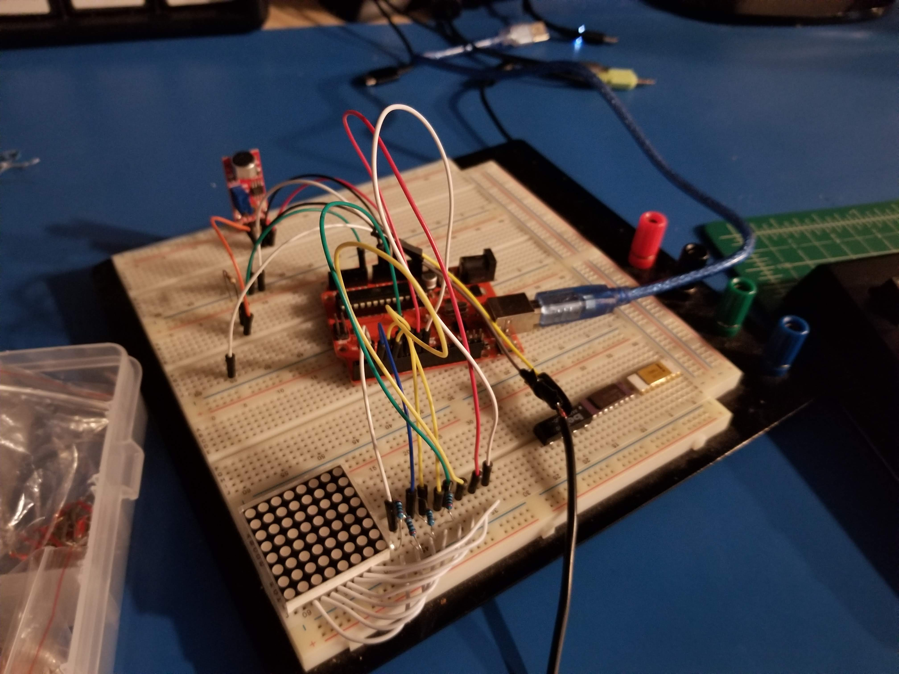
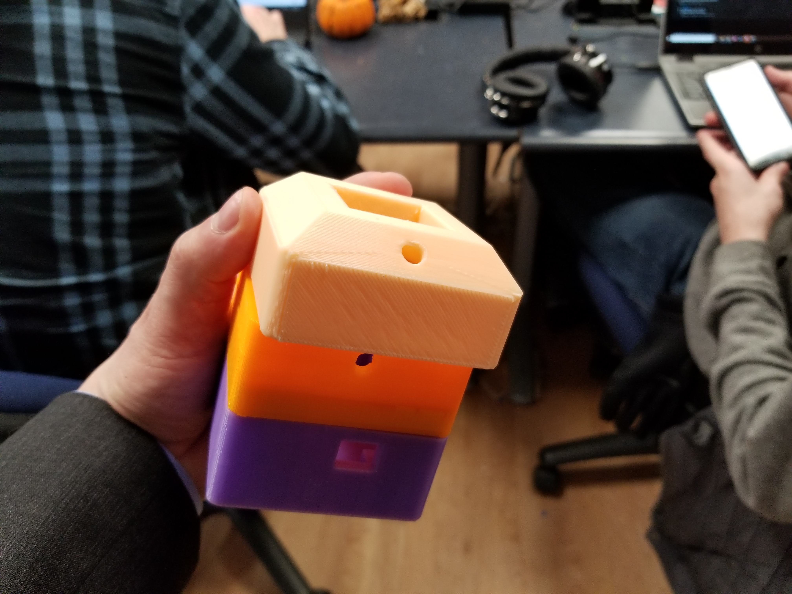
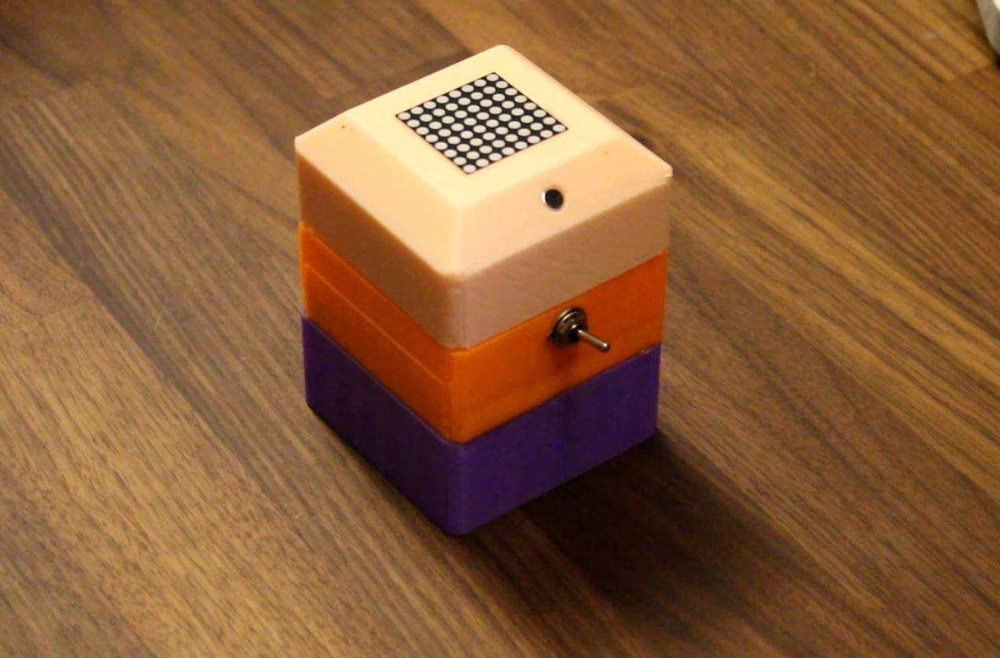

This project was made for ECE 341: Junior Design for Accelerated Project 2 at Oregon State University. It was completed in a group of three with Brandon Rawson, Ichen Lee, and myself. Each team member focused on a particular aspect of the project. The team member responsibilities went as follows: Graham Muller worked on component selection, case design and final assembly. Nicholas Lin worked on initial hardware planning, maintaining project archives, and the final video editing. I worked on writing the code and built the first prototype.
The case layout required two 3.5mm audio jacks (one in one out), the microcontroller with hole to access the usb for power, the LED matrix with current limiting resistors, an electret microphone with band-pass filter, and a switch. These all had to be wired together which necessitated extra room in the enclosure. Each component had a small amount of buffer room added to it to deal with the imprecise 3D printing and possible component reselection as the project matures. The LED matrix required to be friction fit into the enclosure. The 3D files are available on Thingiverse.
Moving onto the code for the program, we'll start from the beginning and move through the important functions. You can get a good look at the full code on Github. First we have the global variables and library used in the program. The arduinoFFT library was used due to its simplicity. However there are much faster/better libraries available such as fix_fft and avr-fft. The set-up for the transform was created and the input analog signal pin was set. A sampling frequency of 100Hz was chosen so as to not overload the ATmega168's ADC.
The audio was sampled 64 times in a given sampling period so that the arduinoFFT library could return results quickly. This could be improved upon with if the LED matrix was not relying on multiplexing to display the output. The 64 samples that have been converted to the frequency domain by the FFT are then averaged out to eight different values so that the 8x8 LED matrix can display each of the frequency amplitudes. For a more in-depth discussion on everyone's contribution watch out project presentation video below!
The schematic for this project and enclosure stl files are available below along with the bill of materials for everything inside. Thank you for reading!
Schematic Download
Enclosure Download (on Thingiverse)
Here's the Bill Of Materials for this project
| BOM Item # | Item Name | Quantity | Price/Unit | Total Cost |
|---|---|---|---|---|
| 1 | Arduino Nano (ATmega168PA) | 1 | $4.50 | |
| 2 | 8x8 LED Matrix | 1 | $2.00 | |
| 3 | 3.5mm Audio Jacks | 2 | $1.50 | |
| 4 | Electret Microphone | 2 | $3.00 | |
| 5 | 200Ω Resistor | 8 | $0.05 | |
| 6 | 2.2kΩ Resistor | 1 | $0.05 | |
| 7 | 40ct. Male Header Pins | 1 | $1.00 | |
| 8 | 100kΩ Resistor | 1 | $0.05 | |
| 9 | 0.1µF Capacitor | 1 | $0.35 | |
| 10 | 10nF Capacitor | 2 | $0.35 | |
| $12.05 |